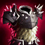

1. Vara de las edades
Precio: 2700 Oro
Pasiva ÚNICA, Eternidad:
Se obtiene como maná un 15% del daño sufrido de campeones. Al gastar maná se recupera un 20% del coste como vida, hasta un máximo de 25 por lanzamiento.
Otorga 1 acumulación por minuto (máximo de 10 acumulaciones).
2. Cetro de cristal de Rylai
Precio: 3150 Oro
Pasiva ÚNICA:
Las habilidades y hechizos dañinos aplican una reducción de la velocidad de movimiento que depende de su tipo:
Daño prolongado o impacto múltiple: 20% de reducción durante 1 s.
Súbditos invocados: 20% de reducción durante 1 s.
3. Armadura de Warmog
Precio: 3800 Oro
Pasiva ÚNICA:
+10% de reducción de enfriamiento.
Pasiva ÚNICA:
Otorga Corazón de Warmog si tienes al menos 3000 de vida máxima.
Corazón de Warmog: Restaura un 15% de tu vida máxima cada 5 s si no has recibido daño en los últimos 8 s.
4. La Cuchilla Negra

Precio: 3400 Oro
Pasiva ÚNICA:
Al infligir daño físico a un campeón enemigo, lo Acuchilla y reduce su armadura un 5% durante 6 s (se acumula un máximo de 6 veces, hasta llegar a un 30%).
Pasiva ÚNICA, Rabia:
Infligir daño físico otorga 20 de velocidad de movimiento durante 2 s. Ayudar a asesinar a campeones enemigos
Acuchillados o asesinar a cualquier unidad otorga 60 de velocidad de movimiento durante 2 s.
5. Huracán de Runaan

Precio: 2900 Oro
Pasiva ÚNICA, Furia de Viento:
Al usar ataques básicos, se disparan proyectiles que infligen daño a un máximo de 2 enemigos
cercanos al objetivo. Cada uno inflige daño físico equivalente al 25% del daño de ataque. Los proyectiles pueden realizar impactos críticos y provocar efectos de impacto.
Pasiva ÚNICA: Los ataques básicos infligen 15 de daño físico adicional al alcanzar su objetivo.
6. Mazo Helado
Precio: 3700 Oro
Pasiva ÚNICA, Gélido:
Los ataques básicos ralentizan la velocidad de movimiento del objetivo durante 1.5 s al impactar
(40% de ralentización en los ataques cuerpo a cuerpo, 30% de ralentización en los ataques a distancia).
7. Portal Zz'Rot

Precio: 3480 Oro
Pasiva ÚNICA:
Al ser golpeado por un ataque básico, devuelves un 25% de tu armadura adicional, más un 15% del daño recibido, en forma de daño mágico.
(La armadura adicional es la que te dan objetos, mejoras, runas y maestrías).
(El daño devuelto se calcula basándose en el recibido antes de que sea reducido por la armadura).
8. Malla de espinas

Precio: 3600 Oro
Pasiva ÚNICA:
Al ser golpeado por un ataque básico, devuelves un 25% de tu armadura adicional, más un 15% del daño recibido, en forma de daño mágico.
(La armadura adicional es la que te dan objetos, mejoras, runas y maestrías).
(El daño devuelto se calcula basándose en el recibido antes de que sea reducido por la armadura).